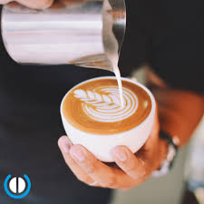
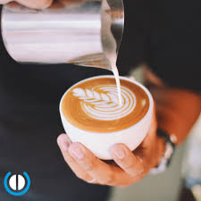

Narrativa
En Espresso Yourself creemos que cada taza es una conversación: del grano al vaso, del productor al barista. Nuestro espacio celebra la atención al detalle, la creatividad en mezclas y la calma necesaria para disfrutar sabores complejos. Nos inspiramos en tradiciones cafeteras y en técnicas culinarias de alta cocina para ofrecerte experiencias memorables.
 
